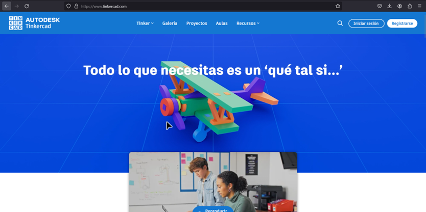
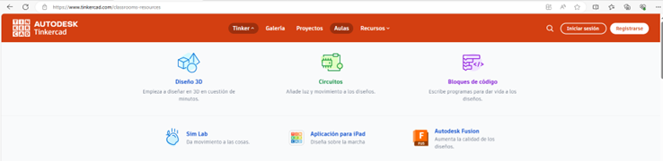
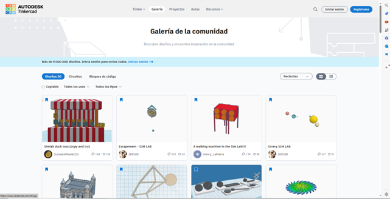
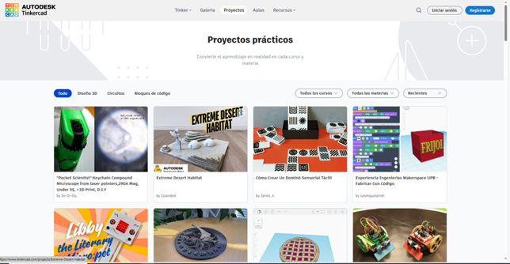
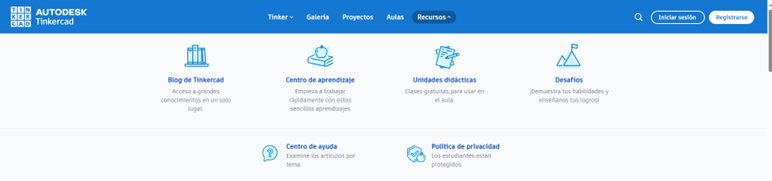

Cuando ingresas a Tinkercad, encontrarás una variedad de opciones geniales en la pantalla principal. Cada una de ellas está diseñada para ayudarte a crear proyectos increíbles. A continuación, exploraremos estas opciones en detalle:

Tinker
En esta sección, encontrarás todas las herramientas que puedes usar para diseñar en Tinkercad, incluyendo:
- Diseño 3D: Crea modelos tridimensionales con herramientas simples e intuitivas.
- Circuitos: Diseña y simula circuitos electrónicos interactivos.
- Bloques de Código: Aprende y aplica programación a tus diseños.
Además, puedes explorar diferentes modos para diseñar, simular movimientos, usar Tinkercad en un iPad y mejorar la calidad de tus diseños.

Galería
La galería es un espacio lleno de modelos creados por otras personas. Aquí puedes:
- Mirar proyectos increíbles creados por la comunidad.
- Descargar y modificar modelos existentes para adaptarlos a tus ideas.

Proyectos
En esta sección, encontrarás proyectos completos hechos por otros usuarios de Tinkercad. Estos proyectos pueden servirte como:
- Inspiración para tus propios diseños.
- Guía para aprender nuevas formas de usar las herramientas de Tinkercad.

Aulas
Las aulas te permiten unirte a clases donde puedes aprender a usar Tinkercad con la ayuda de un maestro. Estas clases son ideales para:
- Mejorar tus habilidades de diseño.
- Aprender de manera estructurada y guiada.
Recursos
En esta sección, encontrarás guías y tutoriales que te ayudarán a:
- Mejorar tu conocimiento en Tinkercad.
- Encontrar ideas para tus diseños.

Iniciar Sesión y Registrarse
Iniciar sesión: Permite acceder a tu cuenta de Tinkercad si ya la has creado previamente.
Registrarse: Crea una nueva cuenta para comenzar a usar Tinkercad y explorar todas sus funciones.
Con estas opciones, Tinkercad te ofrece un entorno completo para diseñar, aprender y compartir tus proyectos de manera creativa e interactiva.